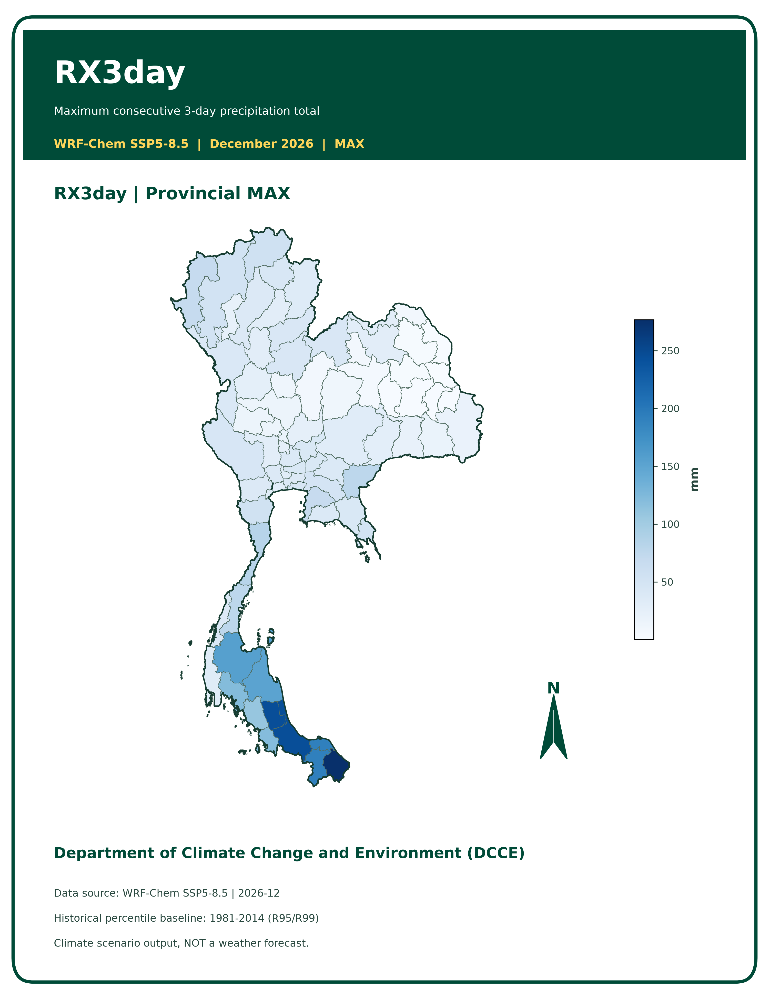

เกี่ยวกับโครงการ
เว็บไซต์สำหรับนำเสนอผลการประเมินปริมาณฝนและดัชนีฝน จากข้อมูลแบบจำลองภูมิอากาศ เพื่อช่วยศึกษาพื้นที่ที่ควรเฝ้าระวัง และสนับสนุนการวิเคราะห์ความเสี่ยงที่เกี่ยวข้องกับฝนหนัก
แผนที่ดัชนีฝนประเทศไทย
เลือกดัชนีฝนและวิธีสรุปผลเพื่อดูแผนที่ที่อัปโหลดไว้ในระบบ
RX3day — MAX

กำลังแสดงแผนที่จาก Repository
การแปลผล
- RX3day, RX5day และ RX7day ใช้ศึกษาปริมาณฝนสะสมสูงสุด ในช่วงเวลาต่อเนื่อง 3, 5 และ 7 วัน
- R20mm, R35mm และ R50mm แสดงจำนวนวันที่ฝนถึงเกณฑ์ 20, 35 และ 50 มิลลิเมตรต่อวัน ตามลำดับ
- MAX และ P95 เป็นสถิติที่ใช้สรุปค่าตามวิธีประมวลผลเดิม ไม่ใช่เปอร์เซ็นต์ความน่าจะเป็นที่จะเกิดน้ำท่วม
ข้อจำกัดในการใช้ข้อมูล
แผนที่นี้เป็นผลการประเมินฝนจากแบบจำลองภายใต้สถานการณ์ SSP5-8.5 ไม่ใช่พยากรณ์อากาศรายวันเพื่อเตือนภัย และไม่สามารถยืนยันว่าจะเกิด น้ำท่วมจริงได้ การประเมินน้ำท่วมต้องพิจารณาข้อมูลระดับน้ำ สภาพพื้นที่ การระบายน้ำ และข้อมูลน้ำท่วมร่วมด้วย